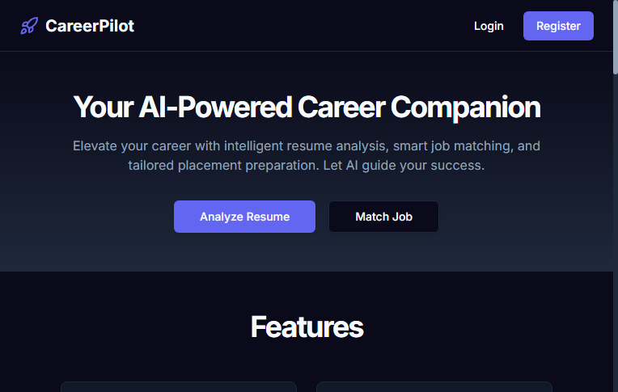

An industrial-grade full-stack web application architected to eliminate campus recruitment barriers. Powered by Next.js 16, React 19, TypeScript, Prisma ORM, and a dual-vector intelligence engine that parses resumes, calculates multi-pillar ATS scores, matches job descriptions, maps skill gaps, and generates structured mock interviews.

During college placement drives, over 75% of engineering student resumes are eliminated by automated Applicant Tracking Systems (ATS) before reaching human recruiters. Rejections occur not because candidates lack technical ability, but due to unparseable file structures, missing target keywords, unquantified impact statements, and mismatched technical terminology.
CareerPilot adheres to a decoupled layered architecture utilizing the Next.js 16 App Router. React Server Components handle initial rendering and security, while client components manage interactive dashboards and live forms:
A critical design decision in CareerPilot is that it never crashes when an external AI API key is missing or quota-exhausted. When external AI is unavailable, the platform automatically routes requests to its built-in Deterministic Rule-Based Heuristic Engine. This engine utilizes regex taxonomies covering 500+ tech stacks to calculate weighted ATS scores and job match percentages with zero latency and zero API charges.
Ingests PDF and DOCX files up to 5MB. Strips binary payloads, parses raw text with pdf-parse and mammoth, segments sections (Education, Skills, Experience, Projects), extracts contact details, and displays an editable verification form before saving.
Calculates a weighted 0–100 composite score based on: Formatting & Parseability (20%), Technical Skills Breadth (25%), Quantified Experience (25%), Education & Certifications (15%), and Section Completeness (15%). Highlights missing sections.
Performs n-gram keyword tokenization between the candidate's resume and target JD. Calculates match percentage, separates matching skills (green) from missing critical skills (red), and generates bullet rewrite recommendations.
Categorizes student competencies into Frontend, Backend, Databases, Cloud/DevOps, and Core CS. Students cycle skills through three progression stages: Identified → Learning → Completed.
Organizes job applications across campus recruitment stages: Saved, Applied, Online Assessment, Technical Interview, HR Round, Offer, or Rejected. Includes date tracking, company search, and interview notes.
Generates tailored technical, HR, behavioral, and project-specific questions based on the candidate's target job role and detected skill stack. Provides expandable suggested answers structured with the STAR method.
Follow this operational guide to use CareerPilot for complete placement readiness:
Navigate to the live app. Click "Get Started" or "Register". Enter your full name, student email, and password. The system hashes your password using PBKDF2 (100,000 rounds) and issues a secure HTTP-only JWT session cookie.
From the Dashboard, select "Upload Resume". Drag and drop your file. The multi-stage parser extracts your contact info, education, skills, projects, and work history. Verify or edit any fields in the preview form, then click "Save & Continue".
Navigate to "Analyze Resume" and click "Analyze Latest Resume". The system evaluates your resume and displays your overall score (0–100), detailed score bars across the 5 pillars, detected skills tags, and concrete suggestions for improvement.
Go to "Job Matching". Paste a company job description (e.g. Google, TCS, Infosys, Amazon SDE). Click "Match Resume". CareerPilot compares your skills against the JD and shows your Match %, green matching tags, red missing tags, and recommended resume edits.
Visit "Skills" to view your personalized skills inventory categorized by domain. Any missing skills identified during job matching are automatically added. Click on badges to update your status from Identified to Learning to Completed.
Open "Interview Prep". Enter your target job title (e.g. Java Full Stack Developer) and difficulty level. Click "Generate Questions". Study the generated Technical, HR, Behavioral, and System Design questions with expandable STAR-format answers.
| Layer | Technology Selected | Architecture Benefit |
|---|---|---|
| Frontend Framework | Next.js 16 (App Router) + React 19 | Zero-bundle server components, rapid routing, and concurrent UI rendering. |
| Language | TypeScript (Strict Mode) | End-to-end type safety across API routes, Prisma models, and UI components. |
| Styling & CSS | Tailwind CSS 4 + Lucide Icons | High-performance utility styling, dark mode support, zero CSS runtime overhead. |
| ORM & Persistence | Prisma 6.19 ORM | Type-safe database client, declarative schema migrations, automated relational indexing. |
| Database Engine | SQLite (Dev) / PostgreSQL (Production) | Zero-config local development with seamless migration to managed cloud PostgreSQL. |
| Authentication | PBKDF2 (100k rounds) + JWT (jose) | Stateless, tamper-proof session tokens stored in secure, HTTP-only SameSite cookies. |
| Validation & Parsing | Zod + pdf-parse + mammoth | Runtime schema validation and binary parsing for PDF and Word DOCX files. |
| Hosting & Edge CDN | Vercel Serverless Edge Network | Instant global deployments, automated CI/CD from GitHub, and automated SSL. |
The deterministic engine uses tokenization and regex matching to inspect 5 core dimensions: structural readability (20%), skills density (25%), action verbs and quantified impact (25%), credential verified weight (15%), and section completeness (15%). This produces deterministic, reproducible scores at 0ms latency.
The Next.js App Router unifies client rendering and backend API routes in a single repository. Server Components execute on the server without shipping JavaScript to the client, while API routes handle database transactions securely without exposing credentials.
Uploaded resumes are parsed directly in memory. Binary files are not stored on public buckets. Parsed metadata is sanitized through Zod schemas and stored in the user's private database partition, accessible only with a valid JWT session token.
It extracts normalized tech keywords and n-grams from both the candidate profile and the target job description. The match score is computed using Jaccard similarity and weighted frequency metrics, giving higher weight to required skills over optional qualifications.